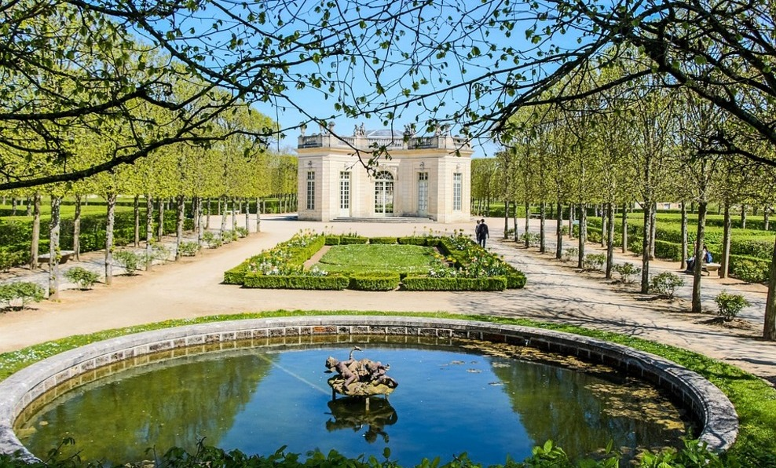
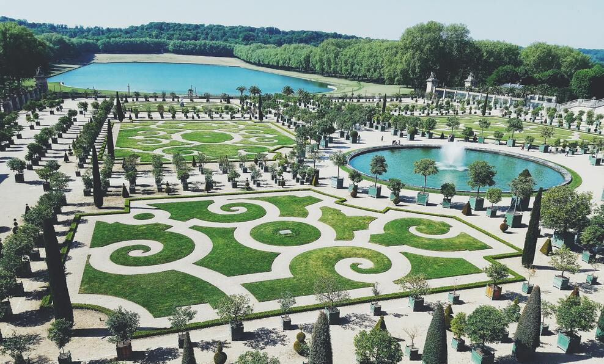
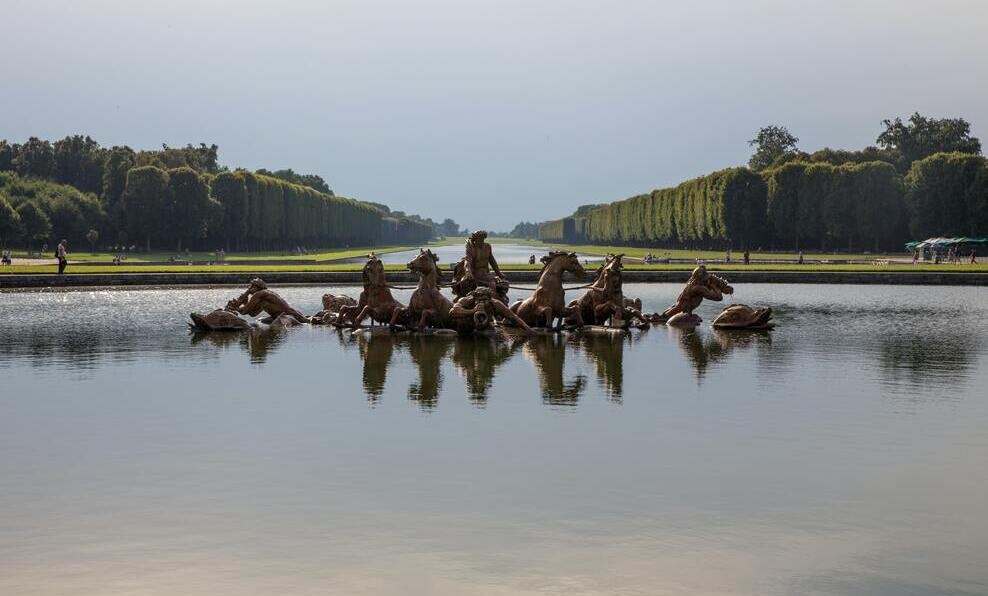
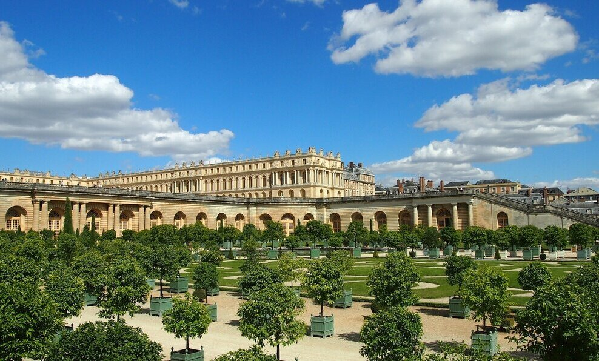
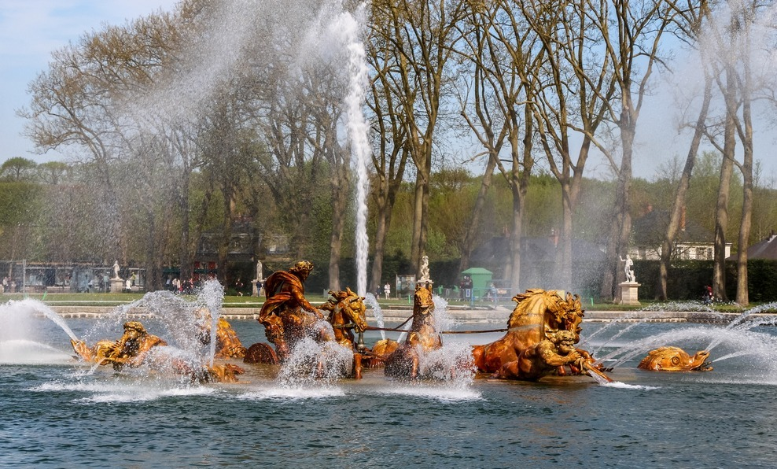
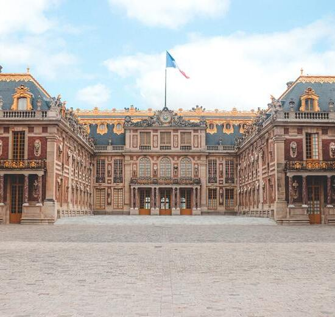

Versailles est une ville située dans la banlieue ouest de Paris née de la volonté du roi Louis XIV. Elle est mondialement connue pour son chateau ainsi que pour ses jardins mais aussi historiquement pour avoir été le lieu de signature de deux traités : le traité de Paris (Guerre d'indépendance américaine) et le traité de Versailles (Première Guerre mondiale).
- 
- 
- 
- 
- 
Francais
86 000 habitants
Top 5 des choses à voir

Le château de Versailles fut la résidence des rois de France Louis XIV, Louis XV et Louis XVI. Le roi et la cour y résidaient de façon permanente. Le chateau s'étale sur 63 154m2 répartis en 2300 pièces. Le parc du château de Versailles s'étend sur 815 ha dont 93 ha de jardins.
Bonnes adresses

Le O'Paris est un pub irlandais proposant une sélection de bières pression et de whiskies, des soirées sports et des jeux.
- 15 rue Colbert
- 78000 Versailles
- 01 72 78 79 12

Le Gaberem est un restaurant de cuisine française autant réputé par ses menus que par la qualité du service.
- 62 Rue Albert Sarrault
- 78000 Versailles
- 01 72 78 77 94

Le vélodrome de Saint-Quentin-en-Yvelines, également nommé Vélodrome national, est un vélodrome situé à Montigny-le-Bretonneux dans les Yvelines.
- 1 rue Laurent Fignon
- 78180 Montigny-le-Bretonneux
- 04 76 35 00 00

Le domaine national de Marly-le-Roi est un parc situé à Marly-le-Roi dans les Yvelines, en bordure de la forêt de Marly.
- Domaine de Marly-le-Roi
- 78160 Marly-le-Roi
- 01 30 83 78 00
Evènements
2-3
Juil
Découvrez les jardins musicaux de Versailles, un moment de détente incroyable dans le Jardin du Roi
9-10
Sept
Les Grandes Eaux Nocturnes du château de Versailles à Versailles
19
Oct
La sorcière du placard aux balais : Monsieur Pierre découvre que la petite maison qu'il vient d'acheter est hantée par une sorcière cachée dans le placard à balais...
Pour plus d'informations

Ville de Versailles
Office du tourisme
Page wikipédia